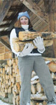
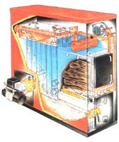

If you want to heat your home with wood, should you choose a woodburning furnace or boiler rather than a woodstove? Woodstoves generally cost less and have better overall efficiency and lower emissions, but sometimes stoves just aren't practical as the sole heat source in homes with many rooms. Some people also prefer a furnace to keep the associated mess or potential hazard out of the main living space.
Central wood heaters and boilers, normally installed in the basement or a utility room, distribute their heat with forcedhot-air or circulating hot-water systems, and can heat any home. If you have a ready supply of firewood and you enjoy handling wood, a wood furnace or boiler may be a good choice.
"There have been substantial changes in the last 10 to 20 years that make it easier and more convenient to use woodfired central heat," according to Lloyd Nichols, co-owner of boiler distributor TARM USA, Inc. in Lyme, New Hampshire. "Part of that equation is that homes have become less energy demanding. Couple that with a more efficient, cleaner-burning heater and the results are impressive. Now, instead of using eight to 10 cords to heat a typical home, we're talking between two to five cords."
The best modern wood-fired furnaces are designed to achieve extremely hot fires that create a lot of usable heat and leave little in the way of emissions to go up the stack. Except for the handling of the firewood, these heaters tend to function more or less like their oil- or gas-fired competitors and are generally controlled by a standard thermostat. When your home is warm enough, the thermostat causes the damper to close, and the fire burns at a reduced level. When more heat is called for, the damper automatically opens again and the fire comes back to a higher temperature.
If your home already has forced-hot-air ductwork, you may want to consider installing a wood-fired furnace (as opposed to a hydronic hot water system). These furnaces generally are thermostatically controlled, have a good-sized firebox, automatic draft control and optional hotwater coils. Many wood furnaces also are designed to burn coal, and some have blowers for increased combustion temperatures as well as optional evaporation pans for humidification. Regardless of their individual features, they all burn wood to heat the air in a heat exchanger. The heated air then is distributed to the living space in your home through ductwork. Because there is generally no heat storage capacity in a forced-hot-air system, the furnace needs to be refueled regularly in order to maintain a comfortable temperature in your home during the colder winter months. This can be a problem for people who are away from home for extended periods of time or who have irregular or unpredictable schedules during the winter.
A wood-fired boiler is an obvious match for a home with radiators or other hydronic systems (hot water moving through pipes). Most boilers feature heavy cast-iron firebox doors, automatic draft regulators and high-limit controls. The firebox is generally surrounded by a water jacket, which transfers the heat from the fire to the water. The heated water is then circulated through the hydronic heat-distribution system to your living space. In addition, the water jacket provides protection from overheating of the firebox, a design feature not available in a hot-air furnace. Most wood boilers offer domestic hot water coils and coal grates as options.
A hydronic, wood-fired central heating system offers many advantages. One of the most obvious is the ability to heat your domestic hot water along with your home from the same boiler. Another potential advantage is that a hydronic system usually can be designed to include extra heat-storage tanks that allow the boiler to be fired somewhat like a masonry heater, where one good hot fire a day may be all you need. Because the fire burns quickly at a high temperature, it also burns cleanly, with virtually no emissions up the stack. The additional water tank(s) store excess heat for later use. This type of storage arrangement is an excellent match with radiant hydronic floor heating, but baseboard heaters or radiators also will work.
One way to get more flexibility is to install a combination central-heating unit. These boilers or furnaces are designed to burn wood and either oil or gas if the wood fire dies down before you get home. This type of system allows you to burn wood when it's convenient to do so, and to rely on the backup fuel when wood is not convenient. Some systems are even equipped with an electric-backup heating coil. Some older combination boilers or furnaces use a single combustion chamber for both fuels. Unfortunately, this creates a design compromise, and these units will never operate at peak potential efficiency for either fuel.
It's also not unusual for the soot and fly ash from a wood-fired combination unit to coat the head of the oil burner, requiring frequent cleaning of the oil-burner head. This problem is eliminated when the combination boiler or furnace has two separate combustion chambers, a feature more typical of current technology. With this design, both combustion chambers can be engineered to maximize the efficient burning of their respective fuels. In a multi-fuel heater, the two fuels are not normally used simultaneously. Wood combination heaters can be either hot-air furnaces or hot-water boilers. The main disadvantage of most combination units is that they tend to be almost twice as expensive as a single-fuel heater.
There is yet another, very popular, multi-fuel strategy: dual units, sometimes referred to as "add-ons." With this approach, a separate wood-fired boiler or furnace is installed as an add-on to an existing fossil-fueled central heating system. If properly installed, a dual-unit strategy will result in effective operation for both units. The add-on strategy is an ideal way to make an existing fossil-fueled system renewable at least part of the time. The drawback is that it's expensive to install a second system. But dual systems do offer maximum operational and fueling flexibility.
This discussion about wood-fired central heat would not be complete without mentioning outdoor boilers. Outdoor boilers (often erroneously called "furnaces" by their manufacturers) are quite popular in many rural parts of the United States.
In most designs, a water jacket surrounds the boiler's firebox and heat is transferred from the fire to the water, which is then pumped through insulated underground water lines to your house. The hot water then passes through a heat exchanger, or directly into a variety of heat emitters, and can be connected to your domestic hot water tank as well. In addition to your home, a properly sized outdoor boiler can also heat separate garages, sheds, workshops, and even barns and swimming pools.
Since the combustion takes place outdoors, the indoor dirt and dust normally associated with burning wood in the home are eliminated. On the downside, you need to put on your boots, cap, gloves and parka to trudge out into the blowing, drifting snow to keep the fire going.
Because they're located outside, these boilers are exempt from U.S. Environmental Protection Agency emission standards. Due to their oversized fireboxes, many outdoor boilers are hard to regulate for a clean burn and tend to produce more air pollution than their indoor cousins. These units tend to smoke a lot, especially during the automatic restart phase after a long off-cycle.
According to studies and feedback from some people who have actually used these boilers, some of the manufacturers' claims appear to be overstated. There are claims of "combustion efficiencies" of more than 90 percent. Even if this were true, the only meaningful efficiency number is "overall efficiency." In 1998, the EPA sponsored a test of two outdoor boilers. The average of the tests for each unit resulted in an efficiency of about 50 percent (compared to efficiencies in the 70 percent range for many EPA-certified woodstoves).
Claims by some manufacturers for up to 96 hours of heat out of a single firebox load of wood don't generally seem to hold up in the real world either. Twenty-four hours appear to be a more realistic maximum for most folks. The life expectancy of some of these boilers has not been very good; some have been known to spring leaks after just a few years. Under certain circumstances, an outdoor boiler might make sense, but for most folks, a wood-fired central heater or woodstove is probably a better choice. You'll burn less wood and save money in the long run.
The designs, features and quality offered by domestic wood-fired central boilers and furnaces vary quite a bit. Cheaper is not necessarily better. Unlike woodstoves, these furnaces and boilers all tend to look about the same from the outside. They generally are a rectangular box with several castiron doors and a few dials, gauges or switches on the front end. What's inside the box, how well its components are designed and how efficiently they operate are the main points on which to focus.
If you are going to go to the trouble and expense of having someone drag one of these things into your basement and connect it to your heating system, you want it to last a long, long time, probably for as long as you own your home. Be sure to look at the company's history carefully and try to get as much unbiased, third-party feedback as possible. The longer the manufacturer has been in business, the better your chances of getting a quality product. Talk to an experienced wood-fired central heating expert, check out HearthNet ( www.hearth.com ) or Woodheat.org ( www.woodheat.org ) for useful information, customer feedback and industry links.
Be sure to read the warranty on the furnace or boller carefully, especially the fine print. Almost all warranties have a long list of exclusions. Read the exclusion list thoroughly. A solid 20-year warranty is going to be of greater value in the long run than a very limited three- or five-year warranty. Regardless of its duration, a warranty is worthless if the manufacturer goes out of business shortly after you buy your heater.
Matching your wood-fired central heating unit to the heating needs of your home is extremely important. As with woodstoves, bigger is not always better when it comes to central-heating units. A furnace or boiler that is too big just ends up spending most of its time smoldering and creating creosote and high emissions, the same as an oversized woodstove. This is not good for your furnace or boiler, and it's not good for the environment. Your local central heating contractor, boiler or furnace supplier (or possibly your fuel company, if it does service and installation work) can help match the right-sized unit to your particular needs.
Although the installation of a wood-fired central heating system is definitely a job for a professional (many units weigh more than 1,000 pounds and require electrical, plumbing and sheet metal expertise), there are some general factors to keep in mind during the early planning stages. Be sure to allow plenty of room to work around your woodfired furnace or boiler and make sure you have adequate space to store your dried firewood in a handy location. Another important factor is the location of your chimney. Chimneys located on an outside wall for their entire run can be problematic for a wood-fired central heater because of the increased potential for creosote formation. Outside chimneys are popular with many architects because they look attractive, but most wood-fired appliance dealers and installers hate them. A centrally located chimney protected by the envelope of your home is the best design.
Regardless of the fuel they burn, central heating systems generally use electronic thermostats, pumps or blowers, and other controls that will need a reliable source of electricity. If your power goes down, you have a problem. The least expensive approach is to have a backup generator, or you can install a woodstove in a central area.
Adapted from Greg Pahl's forthcoming book, Home Heating Basics: A Guide to Renewable Home Heating.
ALPHA AMERICAN
10 Industrial Blvd.
Palisade, MN 56469
(800) 358-0060
www.yukon-eagle.com
Heat Delivery: Air
Type: Combination
Warranty(yrs): 20
Base Price: $ 3,583
AQUA-THERM, INC.
48301 State Hwy. 55
Brooten, MN 56316
(800) 325-2760
www.aqua-therm.com
Heat Delivery: Water
Type: Wood Only
Warranty(yrs): 15
Base Price: $ 2,890
AMERICAN ENERGY SYSTEMS, INC
150 Michigan St. S.E.
Hutchinson, MN 53550
(800) 495-3196
www.magnumfireplace.com
Heat Delivery: Air
Type: Wood Only
Warranty(yrs): 25
Base Price: $ 1,275
CENTRAL BOILER
20502 160th St.
Greenbush, MN 56726
(800) 248-4681
www.centralboiler.com
Heat Delivery: Air, Water
Type: Combination
Warranty(yrs): 25
Base Price: $ 3,495
*CHARMASTER
2307 Hwy #2 West
Grand Rapids, MI 55744
(218) 326-6786
www.charmaster.com
Heat Delivery: Air,Water
Type: Combination
Warranty(yrs): 20
Base Price: $ 2,500
HUD-SON FOREST EQUIP.
P. O. Box 345
Barneveld, NY 13304
(800) 765-7297
www.Hud-son.com
Heat Delivery: Air, Water
Type: Combination
Warranty(yrs): 12
Base Price: $ 4,985
*DECTRA CORP.
3425 33rd Ave. N.E.
St. Anthony, MN 55418
(612) 781-3585
www.dectra.net/garn
Heat Delivery: Air ,Water
Type: Wood Only
Warranty(yrs): ltd.
Base Price: $ 7,495
HEATMOR, INC.
P.O. Box 787
Warroad, MN 56763
(800)834-7552
www.heatmor.com
Heat Delivery: Air ,Water
Type: Combination
Warranty(yrs): 10
Base Price: $ 4,195
DAKA CORR
955 Industrial St. N.E.
Pine City, MN 55063
(800) 884-3252
www.dakacorp.com
Heat Delivery: Air
Type: Combination
Warranty(yrs): 5
Base Price: $ 747
PACIFIC WESTERN, INC.
Box 267
Atikokan, ON P0T 1C0
(800) 616-4666
www.pacificwesterninc.com
Heat Delivery: Air ,Water
Type: Wood Only
Warranty(yrs): 25
Base Price: $ 4,999(C)
TARM USA, INC.
PO. Box 285
Lyme, NH 03768
(800)782-9927
www.woodboilers.com
Heat Delivery: Air ,Water
Type: Combination
Warranty(yrs): 20 ltd.
Base Price: $ 2,995
SFC INDUSTRIES, INC.
2219 Co. Hwy. G
Rinelander, WI 54501
(877) 693-1688
www.altimatewoodfurnaces.com
Heat Delivery: Air ,Water
Type: Wood Only
Warranty(yrs): 10
Base Price: $ 4,425
LB BRUNK & SONS, INC.
10460 State Route 45
Salem, OH 44460
(800) 522-7865
www.brunks.com
Heat Delivery: Air
Type: Combination
Warranty(yrs): 5
Base Price: $ 1,800
TAYLOR MANUFACTURING
Hwy 701 South
Elizabeth, NC 28337
(800) 545-2293
www.taylormfg.com
Heat Delivery: Air ,Water
Type: Wood Only
Warranty(yrs): 6
Base Price: $ 4,150 FOB
WR BENJAMIN PRODUCTS
P.O. Box 2079
Springhill, NS B0M 1X0
(800) 565-5495
www.benjaminheating.com
Heat Delivery: Air ,Water
Type: Combination
Warranty(yrs): 6
Base Price: $ 2,400 (US),
$ 3,019 (C)
WOOD MASTER/NORTHWEST MFG.
600 Polk Ave. S.W.
Red Lake Falls, MN 56750
(800) 932-3629
www.woodmaster.com
Heat Delivery: Air ,Water
Type: Wood Only
Warranty(yrs): 10 ltd.
Base Price: $ 4,095
U.S. STOVE CO.
P. O. Box 151
South Pittsburg, TN 37380
(423) 837-2100
www.usstove.com
Heat Delivery: Air
Type: Combination
Warranty(yrs): ltd.
Base Price: $ 849
HEAT SOURCE1
207 Market St.
Beatrice, NE 68310
(888) 628-3533
www.heatsource1.com
Heat Delivery: Air ,Water
Type: Combination
Warranty(yrs): 10
Base Price: $ 4,195
*Also sells outdoor boiler; C = Canadian Funds
|
 |
 |
|